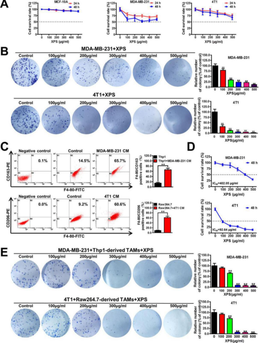

消癖颗粒通过抑制肿瘤TAMs/CXCL1通路抑制乳腺癌干细胞
王胜奇1，2，3，刘晓雁1，黄仁伦1，2，郑轶枫1，2，3，王能1，4，杨博文1，2，司徒红林1，林毅1，王志宇1，2，3，4
DOI https://doi.org/10.3389/fphar.2019.01371
Frontiers in Pharmacology ( IF 5.810 )
摘要
在包括乳腺癌在内的多种恶性肿瘤中，巨噬细胞是与宿主免疫系统相关最密切的基质细胞。2018年，消癖颗粒(XPS)经国家食品药品监督管理局(SFDA)批准用于治疗乳腺增生症，临床疗效确切，无明显不良反应。现有关于XPS抗乳腺癌活性及其作用机制的研究非常有限。
本研究旨在探讨XPS能否通过调节肿瘤相关巨噬细胞在肿瘤微环境中发挥抗乳腺癌作用。
在此，我们利用transwell共培养系统将乳腺癌细胞与TAMs共同培养，模拟它们共存的情况。在共培养体系中，XPS能显著抑制人和小鼠乳腺癌细胞的增殖、集落形成、乳腺癌干细胞亚群、乳腺微球形成能力以及干细胞相关基因的表达。此外，XPS还能抑制M2表型极化，抑制CXCL1的表达和分泌。
值得注意的是，进一步的机制研究证实，TAMs/CXCL1是XPS在共培养体系中抑制乳腺CSCs自我更新的关键靶点，因为外源性CXCL1可以抵消XPS对乳腺CSCs自我更新的抑制作用。
更重要的是，XPS在小鼠4T1-Luc异种移植体内能显著抑制乳腺肿瘤生长、乳腺CSCs亚群和TAMs/CXCL1的活性，而且没有任何可检测到的副作用。
综上所述，本研究不仅揭示了XPS在乳腺癌治疗中的免疫调节机制，而且为TAMs/CXCL1作为消除乳腺CSCs的潜在分子靶点提供了新的见解。
引言
乳腺癌是最常见的恶性肿瘤，也是女性癌症相关死亡的第二大原因(Allemani等人，2015;Bray等人，2018)【1-2】。乳腺癌本身约占全球新诊断癌症病例的24.2%，占全球女性癌症相关死亡病例的15.0%(Bray等人，2018年)【2】。
乳腺癌的发病率仍在上升(Allemani等人，2015)【1】，全球乳腺癌发病年龄趋于年轻化(Ali等人，2011)【3】。
虽然在过去几十年中，由于早期发现和包括常规手术、放射治疗、化疗、内分泌治疗和分子靶向治疗在内的多学科进展，乳腺癌患者的总体存活率有了显著提高，但仍有相当比例的患者会复发，甚至死于乳腺癌(Chia等人，2008年)【4】。因此，人们正在作出广泛的努力，以确定新的治疗目标或开发新的药物治疗这种可怕的疾病。
中医药在延长癌症患者的生存时间、减轻副作用和提高生活质量方面取得了令人鼓舞的效果，几千年来，中医药一直被广泛应用于癌症的预防和治疗，主要在中国及其周边地区(Nie等人，2016;Liao等人，2017)【5-6】。值得注意的是，中医药在乳腺癌治疗中具有独特的优势，可以提高乳房切除术后短期治疗效果，延长5年生存期，并减少乳腺癌患者乳腺切除术后的不良反应发生率(Tian等，2015;Wang等，2015)【7-8】。中医药已广泛应用于乳腺癌的临床治疗。据估计，在台湾，超过35.6%的乳腺癌患者曾接受过中医治疗(Lin and Chiu，2011)【9】。
消癖颗粒是2018年12月28日国家食品药品监督管理局批准的新型抗乳腺增生药物。它已经在临床上用于治疗乳腺增生病几十年了，其疗效已被广泛的临床实践所证实。乳腺癌通常起源于不受控制的乳腺上皮细胞增生和乳腺导管增生，而非典型增生则是乳腺的癌前病变(Santisteban等., 2010)【10】。此外，网络药理学分析表明，消癖颗粒中的10种中药可能含有105种活性化合物，并进一步调控806个潜在靶点，其中81种与乳腺癌的发展密切相关(Wang等，2017)【11】。基于上述证据，我们推测消癖颗粒在抑制乳腺癌方面也可能是有效的。然而，现有关于消癖颗粒抗乳腺癌活性及其作用机制的研究非常有限。
在中医哲学中，乳腺癌被认为是一种系统性疾病，是细胞微环境失调的结果。因此，中医专注于内在免疫的整体增强和重塑肿瘤免疫微环境以治疗乳腺癌，而不是直接杀死癌细胞(Cohen等人，2002;Xie等人，2018)【12-13】。乳腺CSCs是肿瘤细胞的一个亚组，它们具有启动肿瘤的能力，自我更新的能力，多能性和高致
瘤性(Vahidian等人，2019)【14】。越来越多的证据表明，乳腺CSCs对乳腺癌的发生、进展、复发和治疗耐药性至关重要(Shima等人，2017)【15】。因此，迫切需要采取更有针对性的策略来针对乳腺癌干细胞，以改善乳腺癌患者的预后。越来越多的证据表明，CSCs可以通过募集各种免疫细胞并与之相互作用来逃避免疫破坏，促进免疫抑制性肿瘤微环境的建立(Vahidian等人，2019)【14】。因此，进一步阐明乳腺CSCs与免疫细胞的相互作用和潜在的信号机制将为改善乳腺癌免疫治疗提供新的机会(Vahidian等人，2019)【14】。
肿瘤免疫微环境由多种免疫细胞组成，包括巨噬细胞、自然杀伤细胞、骨髓源性抑制细胞(MDSC)、调节性T细胞（Tregs）、细胞毒性T淋巴细胞（CTLs）和辅助性T细胞(Th)(Binnewies等人，2018年）【16】。巨噬细胞是包括乳腺癌在内的多种恶性肿瘤中最丰富的免疫细胞(Lao等人，2017;DelaFuenteLopez等人，2018)【17-18】。巨噬细胞一般分为两个广泛但不同的亚类，即经典激活(M1)，或者是交替激活(M2或肿瘤相关的巨噬细胞(TAMs))(Parisi等人，2018)【19】。M2型巨噬细胞在人类肿瘤中占主导地位，并产生促生长趋化因子，促进肿瘤生长。
TAMs的浸润创造了一种支持癌症发生和分泌多种细胞因子，促进癌症血管生成和侵袭，并抑制抗肿瘤免疫的炎症状态(Mills等人，2016)【20】。TAMs也与促进乳腺癌的生长和转移有关(Hollmen等人，2016)【21】。临床证据有力地证明了乳腺癌患者高TAMs浸润与预后不良之间的关系(Tang等人，2013;Hollmen等人，2016)【21-22】。
中医药因其在肿瘤治疗中的重要作用而倍受关注。多项研究表明，抑制TAMs向M2型极化或重编程TAMs向M1型转变可以抑制肿瘤生长(Parisi等人，2018)【19】。然而，XPS能否抑制肿瘤免疫微环境中巨噬细胞M2极化或其细胞因子的分泌，目前尚不清楚。
本研究通过体外构建TAMs与乳腺癌细胞共培养体系和体内构建乳腺癌细胞异种移植物，系统地证明XPS能够抑制M2表型极化以及CXCL1的表达和分泌，最终导致消癖颗粒对乳腺癌细胞自我更新的抑制作用。总的来说，我们的研究揭示了消癖颗粒在乳腺癌治疗中的免疫调节机制，并强调TAMs/CXCL1是一个潜在的分子靶点，可用于消除乳腺CSCs。
物料及方法
细胞培养和诱导
来自于美国菌种保藏中心的非恶性人乳腺上皮细胞系MCF-10A、人乳腺癌细胞系MDA-MB-231、小鼠乳腺癌细胞系4T1、人急性单核细胞白血病细胞系Thp1和小鼠巨噬细胞系Raw264.7。所有这些细胞系的身份已经通过短串联重复序列分析验证。
MCF-10A细胞在DMEM/F12培养基中培养，补充加入5%马血清、1%青霉素和链霉素(Gibco，GrandIsland，NY，USA)、20ng/ml重组人表皮生长因子(EGF)、0.5μg/ml氢化可的松、100ng/ml霍乱毒素和10μg/ml胰岛素(aldrichsigma，中国上海)。
MDA-MB-231和4T1细胞在添加10%胎牛血清和1%青霉素和链霉素(Gibco)的DMEM培养基中培养。
Thp1和Raw264.7细胞在添加10%胎牛血清和1%青霉素和链霉素(Gibco)的RPMI-1640培养基中培养。
所有细胞在含有5%CO2的湿化培养箱中保持在37℃。
100ng/ml phorbol-12-myristate-13-acetate (PMA, Sigma-Aldrich) 诱导Thp1单核细胞附着和分化为巨噬细胞。
以乳腺癌细胞系MDA-M-231和4T1的细胞培养上清液作为条件培养基(CM)，诱导Thp1巨噬细胞和RAW264.7巨噬细胞向M2表型转化。
对于乳腺癌细胞与TAMs的共培养，采用6孔或24孔跨孔共培养系统。
简而言之，transwell插入物被放置在含有乳腺癌细胞的6孔或24孔培养板中。TAMs置于上交换腔内。
Transwell插入物由一个0.4μm的可渗透膜隔开，允许介质和可溶性分子的自由交换。
消癖颗粒的制备及质量控制
从淫羊藿、肉苁蓉、益母草、丹参、郁金、莪术、女贞子、制何首乌、牡蛎、鳖甲10种中药的混合物中提取了消癖颗粒。采用回流萃取法分别提取，采用高效液相色谱指纹图谱法对其进行质量控制。详细的制备和质量控制信息以前已经报道过(Liu，2010;Wang and Huang，2010;Wang等人，2017)【23-24,11】。
流式细胞仪分析
流式细胞仪分析巨噬细胞表面标志物，鉴定巨噬细胞的表型。在浓度为5×106细胞/ml浓度下，用100μl PBS溶液，对巨噬细胞进行简单的收集、洗涤和悬浮。
以Thp1巨噬细胞为实验对象，在37℃条件下分别用FITC结合的F4/80抗体(SC-71085，Santa Cruz Biotechnology，美国加利福尼亚州圣克鲁斯)和PE结合的CD163抗体(12-1639-42，eBioscience SanDiego，美国加利福尼亚州)孵育30分钟。
对Raw264.7巨噬细胞，在37℃下用FITC结合的F4/80抗体(SC-71085，Santa Cruz)和PE结合的CD206抗体(141705，Biolegend，San Diego,CA)孵育30分钟。
用CD45-PE-Cy7(25-0451-82，eBioscience)、FITC-F4/80抗体(SC-71085，Santa Cruz)和PE-CD206抗体(141705，Biolegend)在37℃培育30分钟，用于对小鼠4T1-Luc异种移植物中原代巨噬细胞进行表型分析。
培养后，用PBS洗涤细胞一次，然后用FC500流式细胞仪(富勒顿Beckman Coulter)或FACSAria Ⅲ流式细胞仪(BD Biosciences，San Diego,CA)进行分析。
将F4/80+/CD163+亚群、F4/80+/CD206+亚群或CD45+/F4/80+/CD206+亚群定量为M2型巨噬细胞。
MTT分析
MTT法检测消癖颗粒对乳腺上皮细胞、乳腺癌细胞和巨噬细胞的细胞毒性。总之，将细胞种植到密度为5×103/孔的96孔板中。细胞粘附后，分别用XPS浓度梯度法处理细胞24h和48h，以探讨XPS在TAMs存在下是否仍对乳腺癌细胞增殖有抑制作用，并与乳腺癌细胞和TAMs在24孔共培养体系中共培养。TAMs以每孔3×104细胞的密度接种在上部transwell小室中，乳腺癌细胞以每孔5×103细胞的密度接种在下部小室中，细胞粘附后用XPS进行连续浓度梯度处理48h，按照制造商的说明书，用MTT法检测细胞活力。MTT测定以独立的三次重复进行。
集落形成试验
为了研究XPS对乳腺癌细胞集落形成的影响，将MDA-MB-231和4T1细胞分别接种于密度为每孔2,000个细胞的6孔板中。
为了探讨在TAMs存在下XPS是否仍具有抑制乳腺癌细胞集落形成的作用，将乳腺癌细胞与TAMs在24孔transwell共培养体系中共同培养。TAMs以3s×104个细胞/孔的密度接种在上部transwell小室中，而乳腺癌细胞以200个细胞/孔的密度接种在下部小室中。
细胞贴壁后，用连续浓度梯度的XPS处理细胞48h，然后用新鲜培养基代替。
然后，细胞培养2周，所得菌落用4%的多聚甲醛固定，再用考马斯蓝染色。
乳腺肿瘤干细胞群体分析
根据制造商的说明，使用ALDEFLUOR干细胞鉴定试剂盒(01700，STEMCELL Technologies，加拿大温哥华)，用流式细胞仪分析乳腺癌干细胞的数量。
简单地说，将乳腺癌细胞种植在密度为4×105个细胞/孔的6孔板中。
为了进行乳腺癌细胞与TAMs的共培养，将4s×105TAMs种植在上部的transwell室中，并将其插入到接种有4×105个乳腺癌细胞/孔的6孔培养板中。
用指定浓度的XPS、CXCL1(人CXCL1，C597，Novoprotein，小鼠CXCL1,250-11-20，Peprotech，Rocky Hill，NJ，美国)或XPS和CXCL1联合处理48h。
处理后收集乳腺癌细胞，再悬浮在500μl ALDEFLUORTM测定缓冲液中，然后，将细胞与ALDEFLUORTM缓冲液在37℃下孵育30min以标记ALDH+细胞。
培养后，用PBS洗涤细胞一次，用FC500流式细胞仪(Beckman)进行分析。定义ALDH+亚群为乳腺CSCs。用特异性抑制ALDH活性的抑制剂二乙氨基苯甲醛(DEAB)控制ALDH染色中的背景荧光。
为了分析小鼠4T1-Luc异种移植物中乳腺CSCs的种群，首先采用机械法从小鼠乳腺肿瘤中分离原发性乳腺癌细胞，然后如上所示进行乳腺CSCs种群分析。
乳腺微球形成分析
将乳腺癌细胞以1×105细胞/孔的超低密度接种在6孔超低附着板上。
为了进行乳腺癌细胞与TAMs的共培养，将4×105个TAMs种植在上层的transwell腔中，并将transwell插入接种有1×105个乳腺癌细胞/孔的6孔培养板中。
然后按提示，用XPS、CXCL1或XPS和CXCL1联合处理上述细胞48h。
用于乳腺微球形成测定的完整培养基为DMEM/F12培养基，添加有1%青霉素-链霉素(Gibco)、2% B27补充剂(Gibco)、20ng/ml EGF、5μg/ml胰岛素和0.4%牛血清白蛋白(BSA、Sigma-Aldrich)。在显微镜下对乳腺微球的数量进行定量。
实时荧光定量核酸扩增检测系统
用Trizol提取总RNA，并用primeScripttmRT试剂盒按照制造商的说明逆转录成互补cDNA。
用SYBR premix Ex TaqKit试剂盒(Takara)和Quant Studio6和7Flex Real-Time PCR系统(应用生物系统，福斯特市，加州，美国)进行RT-PCR。
人β-肌动蛋白(β-actin)的引物序列分别为5′-CCAACCGCGAGAAGATGA
-3′(正向)和5＇-CCAGAGGCGTACAGGGATAG-3′(反向)。
人β-连环蛋白（β-catenin）的引物序列为 5＇-GCTTTCAGTTGAGCTGACCA
-3′(正向)和5′-CAAGTCCAAGATCAGCAGTCTC-3′(反向)。
人OCT4基因的引物序列分别为5′-CAATTTGCCAAGCTCCTGA-3′(正向)和5′-AGATGGTCGTTTGGCTGAAT-3′(反向)。
人Nanog基因的引物序列分别为5′-ATGCCTCACACGGAGACTGT-3′(正向)和5′-CAGGGCTGTCCTGAATAAGC-3′(反向)。
人CXCL1基因的引物序列分别为5′-AGGGAATTCACCCCAAGAAC-3′(正向)和5′-ACTATGGGGGATGCAGGATT-3′(反向)。
小鼠β-肌动蛋白的引物序列分别为5＇-GGAGGGGGTTGAGGTGTT-3-3′(正向)和5′-GTGTGCACTTTTATTGGTCTCAA-3′(反向)。
小鼠β-连环蛋白的引物序列分别为5′-ACAGCACCTTCAGCACTCT-3′(正向)和5′-AAGTTCTTGGCTATTACGACA-3′(反向)。
小鼠OCT4基因的引物序列为5′-CTGTAGGGAGGGCTTCGGGCACTT-3′(正向)和5′-CTGAGGGCCAGGCAGGAGCACGAG-3′(反向)。
小鼠Nanog基因的引物序列分别为5′-AGGGTCTGCTACTGAGATGCTCTG-3′(正向)和5′-CAACCACTGGTTTTTCTGCCACCG-3′(反向)。
小鼠CXCL1基因的引物序列分别为5′-GACTCCAGCCACACTCCAAC-3′(正向)和5′-TGACAGCGCAGCTCATTG-3′(反向)。
蛋白质印迹法
细胞按指示处理后，用RIPA（Beyotime Biotechnology，中国上海）进行裂解。
根据制造商的说明书，用Bicinchoninic Acid试剂盒(Sigma-Aldrich)对蛋白质浓度进行定量。
将等量的蛋白质(30μg)在SDS-PAGE凝胶上溶解，转移到聚偏二氟乙烯微孔膜(Millipore Billerica，MA，USA)上，并用β-actin(4970S，Cell signal Technology，CST，Boston，MA，USA)，CXCL1(AF5403，Affinity Biosciences，OH，USA)和β-catenin(51067-2-AP，美国芝加哥Proteintech)的初级抗体进行检测。
应用Gel-Pro 4.0分析软件（Media Cybernetics,Maryland,USA）比较条带的光密度，计算蛋白质在各组间蛋白质的相对表达水平。
酶联免疫吸附试验(Elisa Assay)
采用酶联免疫吸附试验(Elisa)检测XPS对TAMs分泌CXCL1的影响。
简单地说，采用6孔平板培养TAMs，并用连续浓度梯度XPS处理48h。
经XPS处理后，将TAMs取出，再次以5×105个细胞/孔的密度接种到6孔平板中，培养24h，收集各孔的细胞培养上清液，按照生产说明书使用人CXCL1酶联免疫吸附试剂盒(中国武汉USCN商业公司SEA041Hu)或小鼠CXCL1试剂盒(SEA041Mu,USCN Business)检测细胞培养上清液中CXCL1的浓度。
双荧光素酶报告基因检测
采用双荧光素酶报告基因法研究XPS对CXCL1启动子活性的影响。
根据生产说明书，利用Vigenefection (FH880806，Vigene Biosciences，济南)将CXCL1启动子质粒(Genecopeia，广州)转染到Raw264.7衍生的TAMs。然后将转染细胞种植在密度为2×104个细胞/孔的96孔板中，并用连续浓度梯度XPS处理48h。
经XPS处理后，收集各孔的细胞培养上清液。根据生产厂家的说明，采用Secrete-PairTM Dual Luminescence Assay试剂盒(LF031，Genecopeia)，通过分析细胞培养上清液中Gaussia荧光素酶活性和分泌性碱性磷酸酶活性来检测CXCL1启动子活性。
组织免疫荧光
对于免疫荧光分析，乳腺肿瘤冰冻切片用4%多聚甲醛固定20分钟，用PBS洗涤3次，0.25% Triton X-100透化20分钟，然后室温下用5% BSA封闭1h，对于F4/80和CXCL1检测,将组织切片用F4/80抗体(17-4801-80，eBioscience)和CXCL1抗体(AF5403，Affinity)在4℃通宵孵育，然后与Alexa Fluor 555结合的抗大鼠IgG(4417S，CST)和Alexa Fluor 488结合的抗兔IgG(4412S，CST)孵育2小时。对于ALDH1A1检测，组织切片与ALDH1A1抗体(BF0220，Affinity)在4℃孵育过夜，然后与Alexa Fluor 555结合抗鼠IgG(A21422，Thermo Fisher)二级抗体孵育2h。
4′,6-二氨基-2-苯基吲哚(DAPI，Sigma)用于显示细胞核。采用LSM710共聚焦显微镜(蔡司，耶拿，德国) 获得荧光图像。
动物实验
所有的活体实验都是根据我们机构的实验动物使用指南进行的，并且得到了广东省中医院动物护理和使用委员会(编号2018044)的批准。
在广东省中医院实验动物中心，在室温20-25℃、相对湿度45%-50%的无菌条件下饲养6周龄雌性Balb/c小鼠，并给予无菌食物和饮水。饲养设施维持在12小时的光照-黑暗周期。
将2×106个4T1-Luc细胞悬浮于200μl PBS中，接种于小鼠乳腺脂肪垫皮下，建立4T1-Luc异种移植模型。
当肿瘤直径达到平均0.5cm时，将小鼠随机分为两组(每组6只)，分别灌注生理盐水和XPS(1g/kg/d)。
在整个治疗过程中，小鼠被称重，每3天用卡尺测量它们的肿瘤。
计算肿瘤体积(v)的公式为:v=(长度)×(宽度)2/2。
腹腔注射d-荧光素(150mg/kg weight，122799，PerkinElmer，Boston，USA)，每周使用IVIS Lumina XR体内成像系统(Perkin Elmer)对小鼠进行成像，以监测肿瘤生长和转移。
当肿瘤长到合适的大小时，对小鼠实施安乐死，并切除肿瘤。
用机械方法从新鲜乳腺肿瘤中分离出原代细胞，并进行巨噬细胞表型分析或乳腺CSCs亚群分析。
其余的肿瘤组织储存在零下80℃，如上所示用于组织免疫荧光分析。
统计分析
数据采用平均值±标准差(SD)表示。所有统计分析均使用SPSS19.0软件(Abbott Laboratories美国芝加哥)进行。采用t检验和单因素方差分析进行组间比较。P<0.05具有统计学意义。
结果
共培养体系中XPS显著抑制乳腺癌细胞增殖和集落形成能力
首先，采用MTT法研究了XPS对乳腺上皮细胞和乳腺癌细胞的细胞毒性。
如图1A所示，XPS处理24h或48h只能适度抑制人乳腺癌细胞MDA-MB-231和小鼠乳腺癌细胞4T1的增殖，而对MCF-10A细胞没有明显的细胞毒性。三种细胞的XPS的IC50值均在500μg/ml以上。
然而在2周培养期间XPS可显著抑制乳腺癌细胞MDA-MB-231和4T1的集落形成能力（图1B），表明XPS对乳腺癌细胞增殖有长期抑制作用。
在肿瘤微环境中，癌细胞与多种细胞共存，其中以TAMs占最大比例。TAMs通常表现出免疫抑制M2样表型，促进肿瘤生长并增强对治疗的抵抗力。
MDA-MB-231细胞条件培养基(CM)显著增加Thp1巨噬细胞的F4/80+/CD163+亚群，而4T1-CM显著增加小鼠Raw264.7巨噬细胞的F4/80+/CD206+亚群。这些结果表明，人Thp1巨噬细胞和小鼠Raw264.7巨噬细胞均被成功地刺激为M2型巨噬细胞(图1C)。
乳腺癌细胞与这些M2样表型的TAMs共同培养，利用transwell共培养系统研究TAMs存在时XPS能否抑制乳腺癌细胞的生长。如图1D所示，在共培养体系中，XPS处理48h可显著抑制乳腺癌细胞系MDA-MB-231和4T1的增殖。与TAMs共培养时，XPS对MDA-MB-231细胞和4T1细胞的IC50值分别为402.05μg/ml和92.64μg/ml。同时，XPS还能强烈抑制共培养体系中乳腺癌细胞MDA-MB-231和4T1的集落形成能力(图1E)。
总之，XPS能显著抑制乳腺癌细胞的增殖和集落形成能力，特别是与TAMs共培养时。

图1|消癖颗粒（XPS）显著抑制共培养系统中乳腺癌细胞的增殖和集落形成能力。
（A）通过MTT方法研究XPS在非恶性乳腺上皮细胞系MCF-10A和乳腺癌细胞系MDA-MB-231和4T1中的细胞毒性。
（B）XPS(100~500μg/ml)可显著抑制乳腺癌细胞系MDA-MB-231和4T1的集落形成能力。
（C）人和小鼠巨噬细胞用乳腺癌细胞条件培养基(CM)处理48小时后，均成功诱导为M2表型TAM。
（D）XPS处理48小时可显著抑制共培养系统中乳腺癌细胞系MDA-MB-231和4T1的增殖。IC50值通过Bliss方法计算。
（E）XPS可以显著抑制共培养系统中乳腺癌细胞系MDA-MB-231和4T1的集落形成能力。
所有值均表示为平均值±SD，n=3，**P<0.05。
XPS抑制乳腺癌细胞和TAMs共培养系统中乳腺CSCs的自我更新活性
乳腺CSCs被认为是乳腺癌细胞增殖和生长的启动细胞。因此，我们进一步研究了XPS对乳腺CSCs的影响。
过度活跃的aldehyde dehydrogenase(ALDH)活性与CSCs的生理特性密切相关(Wang and Lei，2017)【25】，与ALDH-亚群相比，ALDH+亚群显示出更强的活性(Shao等.，2016)【26】。
如图2A所示，XPS能显著降低MDA-MB-231细胞和4T1细胞中ALDH+亚群的比例。乳腺CSCs在非粘连的球形细胞集群中富集，被称为乳腺微球(Wang等人，2014)【27】。因此，我们进一步研究XPS能否抑制乳腺CSCs在乳腺癌细胞和TAMs共培养体系中的乳腺微球形成效率。
如图2B所示，XPS治疗显著降低乳腺癌细胞和TAMs共同培养系统中乳腺微球数量。已有研究表明，多种干细胞转录因子在CSCs中过度表达，如八聚体结合转录因子4(OCT4)、Nanog和β-catenin，它们维持多能性(Hattermann等人.2016)【28】。为进一步验证XPS对乳腺癌细胞共培养体系中干细胞表达的抑制作用，采用QPCR方法研究XPS对乳腺癌细胞共培养体系中干细胞相关基因表达水平的影响。
如图2C所示，在共培养乳腺癌细胞中XPS显著减弱干细胞相关基因的表达水平，包括β-catenin、OCT4和Nanog。
众所周知，β-连环蛋白信号通路与乳腺CSCs的干细胞活性增强和耐药性增强有关。此外，已经广泛报道β-连环蛋白可以直接上调OCT4(Kelly等，2011；Lee等，2014；Qi等，2016；Yong等，2016)【29-32】和Nanog(Takao.等，2007；Li.等，2013；Yong.等，2016；Yu.等，2017)【33-35，32】在多种癌细胞和CSCs中的转录基因和蛋白表达。因此，我们只能进一步研究XPS是否能降低β-连环蛋白的表达水平。
如图2D所示，蛋白质印迹法分析进一步证实，XPS也能显著降低共培养乳腺癌细胞中β-连环蛋白的表达水平。
结果表明，XPS可抑制乳腺癌细胞和TAMs共培养系统中乳腺CSCs的自我更新活性。
图2 |消癖颗粒（XPS）抑制乳腺癌细胞和肿瘤相关巨噬细胞（TAMs）共培养系统中乳腺癌干细胞（CSCs）的自我更新活性。
（A）XPS处理48小时可显著降低MDA-MB-231细胞和4T1细胞与TAM共培养时ALDH+亚群的比例。
（B）XPS处理48小时显著降低了共培养乳腺癌细胞的乳腺微球数量。比例尺= 100μm。
（C）XPS处理48小时强烈减弱了共培养的乳腺癌细胞中β-连环蛋白、OCT4和Nanog的mRNA表达水平。
（D）XPS处理48小时可显著减弱共培养的乳腺癌细胞中β-连环蛋白的蛋白表达水平。
所有值均表示为平均值± SD，n=3，**P < 0.05。
XPS抑制M2表型极化、CXCL1表达和TAMs的分泌
大量研究表明，肿瘤微环境中的TAMs可以促进肿瘤的生长。因此，我们推测XPS可以通过调节TAMs来抑制乳腺癌的生长。
如图3A所示，XPS能显著抑制raw264.7衍生的TAMs的增殖，而对Thp1衍生的TAMs没有明显的细胞毒性。
这些结果表明，XPS可能通过其他机制而不是通过直接的细胞毒作用来调节TAMs。TAMs通常表现出促肿瘤生长的M2表型，促进肿瘤生长并增强对治疗的抵抗力。然而，巨噬细胞具有高度的可塑性，并能转化为抗肿瘤M1表型(Parisi等人，2018)【19】。
如图3B所示，XPS能显著抑制乳腺癌细胞条件培养基诱导TAMs的 M2表型极化。
接下来，重要的是研究XPS诱导的TAMs极化变化如何在共培养系统中引起乳腺CSCs种群的强烈变化。由于乳腺癌细胞和TAMs在transwell共培养体系中被0.4μm的可渗透膜分离，只允许介质和可溶性分子的自由交换，而不允许细胞间的直接相互作用，因此我们推测TAMs分泌的一些促肿瘤分子可能被XPS抑制，从而削弱TAMs对乳腺CSCs自我更新的促进作用。CXCL1是TAMs分泌的最丰富的趋化因子(Palomino和Marti等，2015；Wang等，2018)【36-37】。
酶联免疫吸附试验表明，XPS能显著抑制TAMs分泌CXCL1，呈剂量依赖性(图3C)。
蛋白质印迹法和实时荧光定量（QPCR）结果进一步证实，消癖颗粒能显著抑制人和小鼠TAMs中CXCL1蛋白表达水平(图3D，E)和mRNA转录(图3F)，且呈剂量依赖性。
双荧光素酶报告基因实验表明，XPS能抑制肿瘤细胞CXCL1基因的启动子活性。
结果表明，XPS可抑制M2表型极化和CXCL1的表达及TAMs的分泌。
图 3 |消癖颗粒(XPS)抑制M2表型极化、C-X-C基序趋化因子配体1(CXCL1)的表达和肿瘤相关巨噬细胞(TAM)的分泌。
（A）MTT实验表明XPS(100~500 μg/ml)可以强烈抑制Raw264.7来源的TAMs的增殖而对Thp1来源的TAMs没有表现出明显的细胞毒性。
（B）XPS处理48小时可以显著抑制由乳腺癌细胞条件培养基诱导的TAM的M2表型极化。
（C） Elisa测定表明XPS处理48小时可以以剂量依赖性方式显著抑制TAM分泌CXCL1。
（D-E）蛋白质印迹和QPCR结果进一步证实，消癖颗粒处理48小时可以显著抑制人和小鼠TAM中的CXCL1蛋白表达水平（D）和CXCL1 mRNA转录水平（E）。
（F）双荧光素酶报告基因检测表明XPS处理48小时可以抑制Raw264.7衍生的TAM中CXCL1基因的启动子活性。所有值均表示为平均值± SD，n = 3，**P < 0.05。
XPS通过调控TAMs/CXCL1通路抑制乳腺CSCs
由于XPS能显著抑制乳腺癌细胞系CXCL1的表达和分泌，因此进一步研究CXCL1是否是XPS抑制乳腺癌细胞系CXCL1的关键分子具有重要意义。如图4A、B所示，CXCL1能显著增加乳腺癌细胞中的ALDH+亚群和乳腺微球数量。同时，CXCL1能够抑制XPS对乳腺CSCs和乳腺微球形成能力的影响(图2A，B和图4A，B)。QPCR检测进一步表明CXCL1可提高乳腺癌细胞干细胞相关基因β-catenin、OCT4和Nanog的mRNA表达水平，同时消除XPS对上述基因mRNA表达水平的抑制作用(图4C)。蛋白质印迹法分析进一步证实CXCL1能提高乳腺癌细胞中β-catenin蛋白的表达水平，同时逆转XPS对共培养乳腺癌细胞中β-catenin蛋白表达的抑制作用(图4D)。结果表明，XPS可通过抑制TAMs/CXCL通路，抑制乳腺癌细胞和TAMs共培养系统中CSCs的自我更新活性。
图4 |消癖颗粒(XPS)通过调节肿瘤相关巨噬细胞(TAM)/C-X-C 基序趋化因子配体1 (CXCL1)通路抑制乳腺癌干细胞(CSC)。
（A-B）CXCL1刺激48小时可以抵消消癖颗粒对共培养乳腺癌细胞中乳腺CSCs亚群和乳腺球形成能力的抑制作用。比例尺=100μm。
（C）QPCR检测表明CXCL1刺激48小时可以抵消消癖颗粒对共培养乳腺癌细胞中干细胞相关基因（包括β-catenin、OCT4和Nanog）的mRNA表达水平的抑制作用。
（D）蛋白质印迹分析进一步证实CXCL1处理48小时可以抵消消癖颗粒对共培养的乳腺癌细胞中β-连环蛋白表达的抑制作用。所有值均表示为平均值±SD，n = 3，**P < 0.05。
XPS在体内抑制乳腺肿瘤生长及乳腺CSCs活性
基于我们的体外研究结果，在体内验证XPS的抗乳腺癌活性和机制是非常重要的。将荧光素酶标记的4T1-Luc细胞植入Balb/c小鼠乳腺，建立乳腺癌异种移植瘤模型。
在小鼠4T1-Luc异种移植模型中，XPS能有效地抑制乳腺肿瘤的生长(图5A，B)。
此外，与生理盐水组相比，没有观察到治疗相关的死亡率或体重明显下降(图5C)，这意味着XPS给药没有引起额外的毒性和副作用。
值得注意的是，体内成像实验也表明XPS能抑制乳腺癌细胞系4T1-Luc的转移效应(图5A)，提示XPS也可能具有体内抗转移活性。
此外，XPS能显著降低4T1-Luc异种移植物体内巨噬细胞的浸润程度和M2表型极化。与此同时，与我们的体外研究结果一致，XPS在体内强烈减弱了乳腺肿瘤组织中CXCL1的表达(图5D，E)。
这些结果表明，XPS在体内也可能抑制TAMs的M2表型转化和CXCL1分泌。此外，XPS能显著降低4T1-Luc异种移植物中ALDH+亚群的比例，抑制ALDH1A1的表达，提示XPS也能抑制体内乳腺CSCs的活性(图5F，G)。
如补充图1和补充材料与方法所示，与生理盐水组相比，TAMs联合注射能显著增加乳腺肿瘤的生长和乳腺CSCs的数量。此外，XPS治疗和CXCL1基因敲除可部分消除TAMs对乳腺肿瘤生长和乳腺CSCs群的促进作用。
更重要的是，CXCL1在乳腺癌细胞系中的过表达部分逆转了XPS对乳腺肿瘤生长和乳腺CSCs群体的抑制作用。结果表明，XPS可通过调节TAMs/CXCL1通路抑制乳腺肿瘤的生长和乳腺CSCs的活性。
图 5 |消癖颗粒(XPS)在体内抑制乳腺肿瘤生长和乳腺癌干细胞(CSC)活性。
（A）小鼠4T1-Luc异种移植模型体内成像实验的代表性图片。通过将荧光素酶标记的4T1-Luc细胞植入Balb/c小鼠的乳腺，建立了乳腺癌异种移植物。携带4T1-Luc异种移植物的小鼠通过胃内灌注接受盐水或XPS（1 g/kg/天）。
（B）XPS给药可有效抑制体内小鼠4T1-Luc异种移植模型中的乳腺肿瘤生长。n = 6.
（C）生理盐水组和消癖颗粒组之间的小鼠体重没有显著差异，这意味着XPS没有额外的毒副作用。n = 6.
（D-E）XPS给药显著降低了巨噬细胞的浸润程度以及它们的M2表型极化和C-X-C基序趋化因子配体1 (CXCL1) 在体内4T1-Luc异种移植物中的表达。n = 3.
（F-G）XPS给药显著降低了ALDH+亚群(F)的比例并抑制了体内4T1-Luc异种移植物中ALDH1A1 (G) 的表达水平。n = 3。比例尺= 20 μm。所有值均表示为平均值± SD，** P < 0.05。
讨论
乳腺癌的高发病率和死亡率严重威胁妇女健康 (Bray等人，2018年)【2】。几十年来，人们一直在努力寻找和开发新的乳腺癌靶点或治疗策略。虽然许多细胞毒性药物或细胞抑制药物已经被开发用于治疗乳腺癌，如蒽醌类、烷化剂、生物碱和抗代谢物，但由于肿瘤内部和肿瘤间的异质性，它们的治疗效果令人失望(Jin and Ye等，2013；Yuan.等，2016)【38-39】。
最近，传统的策略已经偏向于对肿瘤微环境的理解，从而使肿瘤细胞与其宿主之间的免疫动力学改变成为可能(Kjeldsen等，2018)【40】。一个旨在破解宿主免疫系统的新型药物时代正在稳步来临。新出现的免疫治疗策略，包括免疫检查点抑制剂、治疗性疫苗和过继性细胞治疗，在“难以治疗”的癌症类型和以前难治的病例中带来了难以置信的临床疗效和延长生存期。
在本研究中，我们证明了现有的抗乳腺增生药物XPS通过调节M2表型极化及其CXCL1分泌，在体外显著抑制乳腺CSCs。更重要的是，XPS能抑制小鼠4T1-Luc异种移植物的体内生长。提示XPS可能通过免疫调节作用抑制乳腺癌的发生。这一发现为XPS在乳腺癌治疗中的应用提供了科学依据。此外，本研究还强调了肿瘤免疫微环境是中药抗肿瘤药理活性的关键机制。
CSCs被认为是癌症发生和发展的起源和驱动力(Nilendu.等，2017)【41】。CSCs的微环境由免疫细胞等多种成分组成。免疫细胞与CSCs之间复杂的相互作用正受到越来越多的关注。例如，据报道，与非CSCs相比，CSCs表现出较低的免疫原性，它们可能抑制多种肿瘤相关抗原，从而限制了适应性免疫系统识别它们的效力，并导致癌症复发或转移(Di Tomaso.等，2010；Chikamatsu.等，2011；Volonte.等，2014)【42-44】。CSCs可以分泌多种分子，如TGF-β，可以促进Treg向iTreg分化，从而降低其抗肿瘤免疫力(Dunn等人，2004;Bruttel和Wischhusen等，2014；Maccalli等人，2014)【45-47】。此外，CSCs可以将免疫抑制的免疫细胞募集到肿瘤的微环境中，因此有利于它们自己的生存(Vahidian等人，2019)【14】。关于TAMs，据报道，包括CSF-1和CCL2在内的多种因子在CSCs微环境中富集，并能募集极化为免疫抑制M2表型的巨噬细胞。(Wu等人，2010；Zhou等人，2015)【48-49】。此外，TAMs还可以通过多种方式介导CSCs的功能(Jinushi.，2012；Yang.，2013)【50-51】。例如，据报道，TAMs是防止肿瘤微环境中的CSCs持续免疫监测所必需的(Wynn等人，2013；Noy和Pollard，2014；Sarkar等人，2014)【52-54】。此外，TAMs通过释放TGF-β和有利于干细胞的细胞因子IL-8和CXCL12（Plaks等）【55】，激活CSCs的Hedgehog信号通路，促进CSCs的增殖和侵袭。本研究表明，抑制乳腺癌细胞分泌CXCL1是一种抑制乳腺癌细胞自我更新活性的新工具。这些结果表明，利用免疫调节方法靶向CSCs可能是消除这些肿瘤起始细胞的有效途径。
肿瘤微环境中的免疫细胞，包括TAMs，可以释放趋化因子作为炎症介质，通过激活更多的免疫抑制细胞到肿瘤基质中，最终促进肿瘤的发生和转移，从而影响癌症的发展（De la Fuente Lopez等）【56】。趋化因子是细胞因子的一个大家族，一般分子量在7-15kda之间，具有多效性功能(细胞趋化、细胞因子分泌、细胞增殖和存活)。有两个主要的趋化因子亚家族基于半胱氨酸残基的位置:CXC和CC。目前，大约有50种内源性趋化因子配体被描述，而CXCL1是由TAMs分泌的最丰富的趋化因子(Palomino和Marti等，2015；Wang等人，2018)【57，37】。越来越多的研究表明CXCL1在多种肿瘤的检测和预后预测中是一个很有前景的指标。例如，与临近的非癌组织相比，CXCL1在胃癌组织中的表达上调。CXCL1上调是影响胃癌患者生存的独立预后因素之一，与胃癌患者的肿瘤进展显著相关(Cheng等，2011)【58】。在膀胱癌中，浸润性膀胱癌患者尿液中CXCL1水平显著高于非浸润性膀胱癌患者和正常对照组，这表明CXCL1是预测膀胱癌浸润的独立因素(Kawanishi等，2008)【59】。更重要的是，膀胱癌组织中高浓度的CXCL1水平与膀胱癌中增加的TAMs浸润和病理分期呈正相关(Kawanishi等人，2008；Miyake等人，2016)【59-60】。关于乳腺癌，Zou等人报告说，乳腺癌间质中CXCL1表达增加与患者预后不良有关(Zou等人，2014)【61】。我们以前也报道过来自TAMs的CXCL1在体外可以促进乳腺癌细胞的上皮间质转化、迁移和侵袭。此外，CXCL1基因沉默可抑制TAMs诱导的乳腺癌异种移植物的生长和肺转移。(Wang.等，2018)【37】。机制研究进一步证实NF-κB/SOX4信号通路是TAMs/CXCL1促进乳腺癌转移的主要作用靶点。这与现有的报道一致，即CXCL1介导的TAMs和癌细胞之间的相互作用可以促进人类膀胱癌的肿瘤进展(Miyake等，2016)【60】。此外，TAMs分泌的CXCL1可以募集MDSCs进入肿瘤微环境，其分泌的趋化因子包括S100A8/9，增强癌细胞存活、化疗耐药性、转移和转移微环境形成(Acharyya等人，2012；Miyake等人，2016)【62，60】。在本研究中，我们发现TAMs分泌的CXCL1可以促进乳腺癌细胞的自我更新活性。这与现有的报道一致，即炎症趋化因子CXCL1可以通过增强CD133的表达和aldehyde活性来增强结肠CSC的特性（Hsu等2018）【63】。考虑到乳腺CSCs是乳腺癌发生的起源细胞，也是乳腺癌发展的驱动力，肿瘤微环境中的TAMs/CXCL1通路可能在调节乳腺癌发展和预后方面发挥重要作用，有望成为未来乳腺癌诊断和预后的生物标志物。
总结
结论:XPS可能通过阻断CXCL1介导的TAMs与CSCs之间的相互作用而抑制乳腺癌的生长。本研究不仅揭示了XPS在乳腺癌治疗中的免疫调节机制，而且为TAMs/CXCL1作为乳腺CSCs消除的潜在分子靶点提供了新的见解。
数据可用性声明
本项研究生成的所有数据集都包含在文章/补充材料中。
参考文献
【1】Allemani, C., Weir, H. K., Carreira, H., Harewood, R., Spika, D., and Wang, X. S. (2015). Global surveillance of cancer survival 1995-2009: analysis of individual data for 25,676,887 patients from 279 population-based registries in 67 countries (CONCORD-2). Lancet 385 (9972), 977–1010. doi: 10.1016/S0140-6736(14)62038-9
【2】Bray, F., Ferlay, J., Soerjomataram, I., Siegel, R. L., Torre, L. A., and Jemal, A. (2018). Global cancer statistics 2018: GLOBOCAN estimates of incidence and mortality worldwide for 36 cancers in 185 countries. CA. Cancer J. Clin. 68 (6), 394–424. doi: 10.3322/caac.21492
【3】Ali, I., Wani, W. A., and Saleem, K. J. C. T. (2011). Cancer scenario in India with future perspectives. Cancer Ther. 8 (8), 56–70.
【4】Chia, S., Swain, S. M., Byrd, D. R., and Mankoff, D. A. (2008). Locally advanced and inflammatory breast cancer. J. Clin. Oncol. 26 (5), 786–790. doi: 10.1200/JCO.2008.15.0243
【5】Nie, J., Zhao, C., Deng, L. I., Chen, J., Yu, B., and Wu, X. (2016). Efficacy of traditional Chinese medicine in treating cancer. Biomed. Rep. 4 (1), 3–14. doi: 10.3892/br.2015.537
【6】Liao, Y. H., Li, C. I., Lin, C. C., Lin, J. G., Chiang, J. H., and Li, T. C. (2017). Traditional Chinese medicine as adjunctive therapy improves the long-term survival of lung cancer patients. J. Cancer Res. Clin. Oncol. 143 (12), 2425–2435. doi: 10.1007/s00432-017-2491-6
【7】Tian, H., Qin, W., Wu, W., Guo, P., Lu, Y., and Liu, P. (2015). Effects of traditional chinese medicine on chemotherapy-induced myelosuppression and febrile neutropenia in breast cancer patients. Evid. Based Complement Alternat. Med.2015, 736197. doi: 10.1155/2015/736197
【8】Wang, W., Xu, L., and Shen, C. (2015). Effects of traditional chinese medicine in treatment of breast cancer patients after mastectomy: a meta-analysis. Cell Biochem. Biophys. 71 (3), 1299–1306. doi: 10.1007/s12013-014-0348-z
【9】Lin, Y. H., and Chiu, J. H. (2011). Use of Chinese medicine by women with breast cancer: a nationwide cross-sectional study in Taiwan. Complement Ther. Med.19 (3), 137–143. doi: 10.1016/j.ctim.2011.04.001
【10】Santisteban, M., Reynolds, C., Barr Fritcher, E. G., Frost, M. H., Vierkant, R. A., and Anderson, S. S. (2010). Ki67: a time-varying biomarker of risk of breast cancer in atypical hyperplasia. Breast Cancer Res. Treat. 121 (2), 431–437. doi: 10.1007/s10549-009-0534-7
【11】Wang, N., Zheng, Y., Gu, J., Cai, Y., Wang, S., and Zhang, F. (2017). Network-pharmacology-based validation of TAMS/CXCL-1 as key mediator of XIAOPI formula preventing breast cancer development and metastasis. Sci. Rep. 7 (1), 14513. doi: 10.1038/s41598-017-15030-3
【12】Cohen, I., Tagliaferri, M., and Tripathy, D. (2002). Traditional Chinese medicine in the treatment of breast cancer. Semin. Oncol. 29 (6), 563–574. doi: 10.1053/sonc.2002.50005
【13】Xie, W. J., Lin, Y., Liang, Q. R., Zhong, S. W., Situ, H. L., and Chen, Y. (2018). [Analysis of professor Lin Yi’s experience for metastasis breast cancer by data mining]. Zhongguo Zhong Yao Za Zhi 43 (15), 3198–3204. doi: 10.19540/j.cnki.cjcmm.2018.0095
【14】Vahidian, F., Duijf, P. H. G., Safarzadeh, E., Derakhshani, A., Baghbanzadeh, A., and Baradaran, B. (2019). Interactions between cancer stem cells, immune system and some environmental components: Friends or foes?. Immunol. Lett.208, 19–29. doi: 10.1016/j.imlet.2019.03.004
【15】Shima, H., Yamada, A., Ishikawa, T., and Endo, I. (2017). Are breast cancer stem cells the key to resolving clinical issues in breast cancer therapy?. Gland. Surg.6 (1), 82–88. doi: 10.21037/gs.2016.08.03
【16】Binnewies, M., Roberts, E. W., Kersten, K., Chan, V., Fearon, D. F., and Merad, M. (2018). Understanding the tumor immune microenvironment (TIME) for effective therapy. Nat. Med. 24 (5), 541–550. doi: 10.1038/s41591-018-0014-x
【17】Lao, L., Fan, S., and Song, E. (2017). Tumor associated macrophages as therapeutic targets for breast cancer. Adv. Exp. Med. Biol. 1026, 331–370. doi: 10.1007/978-981-10-6020-5_16
【18】De la Fuente Lopez, M., Landskron, G., Parada, D., Dubois-Camacho, K., Simian, D., and Martinez, M. (2018). The relationship between chemokines CCL2, CCL3, and CCL4 with the tumor microenvironment and tumorassociated macrophage markers in colorectal cancer. Tumour Biol. 40 (11), 1010428318810059. doi: 10.1177/1010428318810059
【19】Parisi, L., Gini, E., Baci, D., Tremolati, M., Fanuli, M., and Bassani, B. (2018). Macrophage polarization in chronic inflammatory diseases: killers or builders?. J. Immunol. Res. 2018, 8917804. doi: 10.1155/2018/8917804
【20】Mills, C. D., Lenz, L. L., and Harris, R. A. (2016). A breakthrough: macrophage-directed cancer immunotherapy. Cancer Res. 76 (3), 513–516. doi: 10.1158/0008-5472.CAN-15-1737
【21】Hollmen, M., Karaman, S., Schwager, S., Lisibach, A., Christiansen, A. J., and Maksimow, M. (2016). G-CSF regulates macrophage phenotype and associates with poor overall survival in human triple-negative breast cancer. Oncoimmunol. 5 (3), e1115177. doi: 10.1080/2162402X.2015.1115177
【22】Tang, X. (2013). Tumor-associated macrophages as potential diagnostic and prognostic biomarkers in breast cancer. Cancer Lett. 332 (1), 3–10. doi: 10.1016/j.canlet.2013.01.024
【23】Liu, H. (2010). Study on determination of Xiaopi Granules by HPLC. China Medical Herald 7 (27), 47–48. doi: 10.3969/j.issn.1673-7210.2010.27.024
【24】Wang, D., and Huang, N. (2010). Determination of tanshinone in Xiaopi Granules by TLC. Guangzhou Medical J. 41 (05), 59–60. doi: 10.3969/j.issn.1000-8535.2010.05.029
【25】Wang, Y. P., and Lei, Q. Y. (2017). Perspectives of reprogramming breast cancer metabolism. Adv. Exp. Med. Biol. 1026, 217–232. doi: 10.1007/978-981-10-6020-5_10
【26】Shao, J., Fan, W., Ma, B., and Wu, Y. (2016). Breast cancer stem cells expressing different stem cell markers exhibit distinct biological characteristics. Mol. Med. Rep. 14 (6), 4991–4998. doi: 10.3892/mmr.2016.5899
【27】Wang, Z., Wang, N., Li, W., Liu, P., Chen, Q., and Situ, H. (2014). Caveolin-1 mediates chemoresistance in breast cancer stem cells via beta-catenin/ABCG2 signaling pathway. Carcinogenesis 35 (10), 2346–2356. doi: 10.1093/carcin/bgu155
【28】Hattermann, K., Fluh, C., Engel, D., Mehdorn, H. M., Synowitz, M., and Mentlein, R. (2016). Stem cell markers in glioma progression and recurrence. Int. J. Oncol. 49 (5), 1899–1910. doi: 10.3892/ijo.2016.3682
【29】Kelly, K. F., Ng, D. Y., Jayakumaran, G., Wood, G. A., Koide, H., and Doble, B. W. (2011). beta-catenin enhances Oct-4 activity and reinforces pluripotency through a TCF-independent mechanism. Cell Stem. Cell 8 (2), 214–227. doi: 10.1016/j.stem.2010.12.010
【30】Lee, S. H., Koo, B. S., Kim, J. M., Huang, S., Rho, Y. S., and Bae, W. J. (2014). Wnt/beta-catenin signalling maintains self-renewal and tumourigenicity of head and neck squamous cell carcinoma stem-like cells by activating Oct4. J. Pathol.234 (1), 99–107. doi: 10.1002/path.4383
【31】Qi, Y. F., Wu, L., Li, Z. Q., Wu, M. L., Wang, H. F., and Chan, K. Y. (2016). Nodal signaling modulates the expression of Oct-4 via nuclear translocation of betacatenin in lung and prostate cancer cells. Arch. Biochem. Biophys. 608, 34–41. doi: 10.1016/j.abb.2016.07.003
【33】Takao, Y., Yokota, T., and Koide, H. (2007). Beta-catenin up-regulates Nanog expression through interaction with Oct-3/4 in embryonic stem cells. Biochem. Biophys. Res. Commun. 353 (3), 699–705. doi: 10.1016/j.bbrc.2006.12.072
【34】Li, X. Q., Yang, X. L., Zhang, G., Wu, S. P., Deng, X. B., and Xiao, S. J. (2013). Nuclear beta-catenin accumulation is associated with increased expression of Nanog protein and predicts poor prognosis of non-small cell lung cancer. J. Transl. Med. 11, 114. doi: 10.1186/1479-5876-11-114
【35】Yu, S. J., Kim, H. J., Lee, E. S., Park, C. G., Cho, S. J., and Jeon, S. H. (2017). betaCatenin accumulation is associated with increased expression of nanog protein and predicts maintenance of MSC self-renewal. Cell Transplant 26 (2), 365–377. doi: 10.3727/096368916X693040
【36】Palomino, D. C., and Marti, L. C. (2015). Chemokines and immunity. Einstein (Sao Paulo) 13 (3), 469–473. doi: 10.1590/S1679-45082015RB3438
【37】Wang, N., Liu, W., Zheng, Y., Wang, S., Yang, B., and Li, M. (2018). CXCL1 derived from tumor-associated macrophages promotes breast cancer metastasis via activating NF-kappaB/SOX4 signaling. Cell Death Dis. 9 (9), 880. doi: 10.1038/s41419-018-0876-3
【38】Jin, S., and Ye, K. J. (2013). Targeted drug delivery for breast cancer treatment. Recent Patents Anti-Cancer Drug Discovery 8 (2), 143–153. doi: 10.2174/1574892811308020003
【39】Yuan, T., Yue, W., Kiani, M. F., and Wang, B.J.C.B.C. (2016). Classification, treatment strategy, and associated drug resistance in breast cancer. Clin. Breast Cancer 16 (5), 335–343. doi: 10.1016/j.clbc.2016.05.012
【40】Kjeldsen, J. W., Donia, M., and Svane, I. M. (2018). Cancer immunotherapy. Ugeskr. Laeger. 180 (21).
【41】Nilendu, P., Kumar, A., Kumar, A., Pal, J. K., and Sharma, N. K. (2017). Breast cancer stem cells as last soldiers eluding therapeutic burn: a hard nut to crack. Int. J. Cancer. 142 (1), 7–17. doi: 10.1002/ijc.30898
【42】Di Tomaso, T., Mazzoleni, S., Wang, E., Sovena, G., Clavenna, D., and Franzin, A. (2010). Immunobiological characterization of cancer stem cells isolated from glioblastoma patients. Clin. Cancer Res. 16 (3), 800–813. doi: 10.1158/1078-0432.CCR-09-2730
【43】Chikamatsu, K., Takahashi, G., Sakakura, K., Ferrone, S., and Masuyama, K. (2011). Immunoregulatory properties of CD44+ cancer stem-like cells in squamous cell carcinoma of the head and neck. Head Neck 33 (2), 208–215. doi: 10.1002/hed.21420
【44】Volonte, A., Di Tomaso, T., Spinelli, M., Todaro, M., Sanvito, F., and Albarello, L. (2014). Cancer-initiating cells from colorectal cancer patients escape from T cell-mediated immunosurveillance in vitro through membrane-bound IL-4. J. Immunol. 192 (1), 523–532. doi: 10.4049/jimmunol.1301342
【45】Dunn, G. P., Old, L. J., and Schreiber, R. D. (2004). The three Es of cancer immunoediting. Annu. Rev. Immunol. 22, 329–360. doi: 10.1146/annurev.immunol.22.012703.104803
【46】Bruttel, V. S., and Wischhusen, J. (2014). Cancer stem cell immunology: key to understanding tumorigenesis and tumor immune escape?. Front. Immunol. 5, 360. doi: 10.3389/fimmu.2014.00360
【47】Maccalli, C., Volonte, A., Cimminiello, C., and Parmiani, G. (2014). Immunology of cancer stem cells in solid tumours. A. Rev. Eur. J. Cancer 50 (3), 649–655. doi: 10.1016/j.ejca.2013.11.014
【48】Wu, A., Wei, J., Kong, L. Y., Wang, Y., Priebe, W., and Qiao, W. (2010). Glioma cancer stem cells induce immunosuppressive macrophages/microglia. Neuro. Oncol. 12 (11), 1113–1125. doi: 10.1093/neuonc/noq082
【49】Zhou, W., Ke, S. Q., Huang, Z., Flavahan, W., Fang, X., and Paul, J. (2015). Periostin secreted by glioblastoma stem cells recruits M2 tumour-associated macrophages and promotes malignant growth. Nat. Cell Biol. 17 (2), 170–182. doi: 10.1038/ncb3090
【50】Jinushi, M., Baghdadi, M., Chiba, S., and Yoshiyama, H. (2012). Regulation of cancer stem cell activities by tumor-associated macrophages. Am. J. Cancer Res. 2 (5), 529–539.
【51】Yang, J., Liao, D., Chen, C., Liu, Y., Chuang, T. H., and Xiang, R. (2013). Tumorassociated macrophages regulate murine breast cancer stem cells through a novel paracrine EGFR/Stat3/Sox-2 signaling pathway. Stem. Cells 31 (2), 248–258. doi: 10.1002/stem.1281
【52】Wynn, T. A., Chawla, A., and Pollard, J. W. (2013). Macrophage biology in development, homeostasis and disease. Nat. 496 (7446), 445–455. doi: 10.1038/nature12034
【53】Noy, R., and Pollard, J. W. (2014). Tumor-associated macrophages: from mechanisms to therapy. Immun. 41 (1), 49–61. doi: 10.1016/j.immuni.2014.06.010
【54】Sarkar, S., Doring, A., Zemp, F. J., Silva, C., Lun, X., and Wang, X. (2014). Therapeutic activation of macrophages and microglia to suppress brain tumorinitiating cells. Nat. Neurosci. 17 (1), 46–55. doi: 10.1038/nn.3597
【55】Plaks, V., Kong, N., and Werb, Z. (2015). The cancer stem cell niche: how essential is the niche in regulating stemness of tumor cells?. Cell Stem. Cell 16 (3), 225–238. doi: 10.1016/j.stem.2015.02.015
【56】De la Fuente Lopez, M., Landskron, G., Parada, D., Dubois-Camacho, K., Simian, D., and Martinez, M. (2018). The relationship between chemokines CCL2, CCL3, and CCL4 with the tumor microenvironment and tumorassociated macrophage markers in colorectal cancer. Tumour Biol. 40 (11), 1010428318810059. doi: 10.1177/1010428318810059
【57】Palomino, D. C., and Marti, L. C. (2015). Chemokines and immunity. Einstein (Sao Paulo) 13 (3), 469–473. doi: 10.1590/S1679-45082015RB3438
【58】Cheng, W. L., Wang, C. S., Huang, Y. H., Tsai, M. M., Liang, Y., and Lin, K. H. (2011). Overexpression of CXCL1 and its receptor CXCR2 promote tumor invasion in gastric cancer. Ann. Oncol. 22 (10), 2267–2276. doi: 10.1093/annonc/mdq739
【59】Kawanishi, H., Matsui, Y., Ito, M., Watanabe, J., Takahashi, T., and Nishizawa, K. (2008). Secreted CXCL1 is a potential mediator and marker of the tumor invasion of bladder can
【60】Miyake, M., Hori, S., Morizawa, Y., Tatsumi, Y., Nakai, Y., and Anai, S. (2016). CXCL1-mediated interaction of cancer cells with tumor-associated macrophages and cancer-associated fibroblasts promotes tumor progression in human bladder cancer. Neoplasia 18 (10), 636–646. doi: 10.1016/j.neo.2016.08.002
【61】Zou, A., Lambert, D., Yeh, H., Yasukawa, K., Behbod, F., and Fan, F. (2014). Elevated CXCL1 expression in breast cancer stroma predicts poor prognosis and is inversely associated with expression of TGF-beta signaling proteins. BMC Cancer 14, 781. doi: 10.1186/1471-2407-14-781
【62】Acharyya, S., Oskarsson, T., Vanharanta, S., Malladi, S., Kim, J., and Morris, P. G. (2012). A CXCL1 paracrine network links cancer chemoresistance and metastasis. Cell 150 (1), 165–178. doi: 10.1016/j.cell.2012.04.042
【63】Hsu, Y. L., Chen, Y. J., Chang, W. A., Jian, S. F., Fan, H. L., and Wang, J. Y. (2018). Interaction between tumor-associated dendritic cells and colon cancer cells contributes to tumor progression via CXCL1. Int. J. Mol. Sci. 19 (8), 1–17. doi: 10.3390/ijms19082427